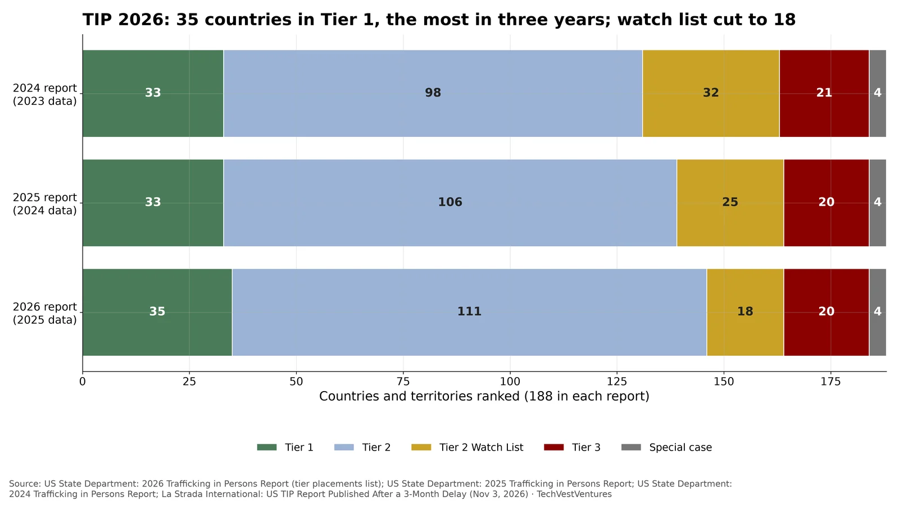
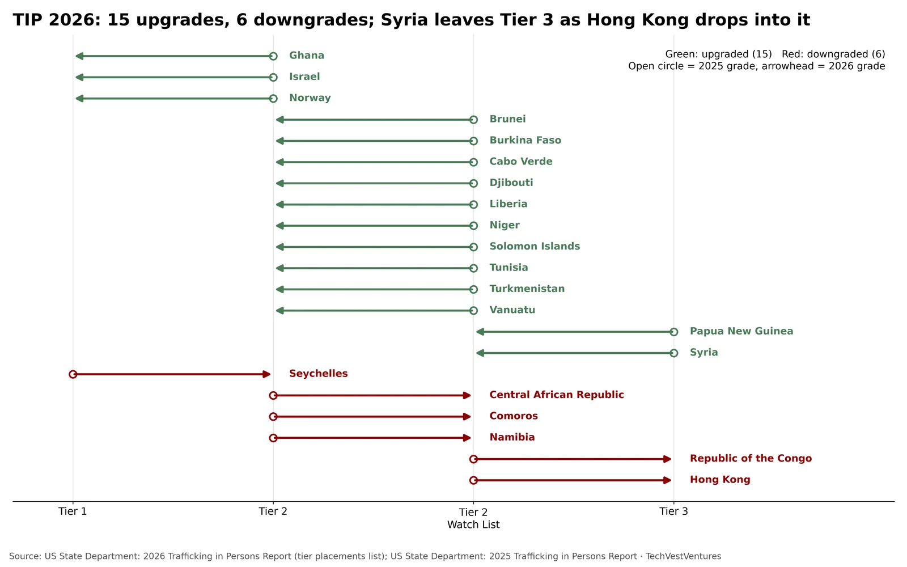

Q12. TIP Tiers

How the US State Department graded 188 governments' anti-trafficking efforts in its last three Trafficking in Persons reports. The 2026 report, published about three months late, covers April 2025 to March 2026. It placed 35 countries in Tier 1 (fully meeting US minimum standards), up from 33, and shrank the Tier 2 Watch List from 32 in 2024 to 18; Tier 3, the worst grade, which can trigger US aid restrictions, held at 20. The grades sit awkwardly beside the report's own numbers: it records the most victims identified and the most prosecutions ever, and La Strada International notes that Europe identified 36,109 victims but recorded only 1,360 convictions. Tier placements measure government effort as judged in Washington, not how much trafficking takes place, so a better grade does not mean fewer victims.
- 2024 report: Tier 1 33, Tier 2 98, Watch List 32, Tier 3 21, special cases 4.
- 2025 report: Tier 1 33, Tier 2 106, Watch List 25, Tier 3 20, special cases 4.
- 2026 report: Tier 1 35, Tier 2 111, Watch List 18, Tier 3 20, special cases 4 (Haiti, Libya, Somalia, Yemen).
- 2026 report global law-enforcement data for 2025: 24,254 prosecutions, 7,576 convictions and 156,912 victims identified.
- La Strada International: 19 European countries in Tier 1, the same as last year; Russia and Belarus are Europe's only Tier 3 countries.
Sources: US State Department: 2026 Trafficking in Persons Report (tier placements list) US State Department: 2025 Trafficking in Persons Report US State Department: 2024 Trafficking in Persons Report La Strada International: US TIP Report Published After a 3-Month Delay (Nov 3, 2026)

Every country whose Trafficking in Persons grade changed between the 2025 and 2026 reports. Upgrades outnumbered downgrades 15 to 6. Israel, Norway and Ghana rose to Tier 1 while Seychelles fell out of it; Syria and Papua New Guinea left Tier 3 for the Watch List; Hong Kong and the Republic of the Congo were dropped to Tier 3, joining China, Russia, North Korea, Iran and others. Syria's upgrade follows the change of government in Damascus at the end of 2024. Tier moves are diplomatic as well as technical judgments: the report grades government effort against US standards, and an upgrade can reflect new laws or cooperation with Washington rather than fewer victims on the ground.
- Upgraded to Tier 1: Israel, Norway, Ghana. Downgraded from Tier 1: Seychelles.
- Off the Watch List to Tier 2: Brunei, Burkina Faso, Cabo Verde, Djibouti, Liberia, Niger, Solomon Islands, Tunisia, Turkmenistan, Vanuatu.
- Onto the Watch List from Tier 2: Central African Republic, Comoros, Namibia. Into Tier 3: Hong Kong, Republic of the Congo. Out of Tier 3: Syria, Papua New Guinea.
- 2026 Tier 3: Afghanistan, Belarus, Burma, Cambodia, Chad, China, Republic of the Congo, Cuba, Eritrea, Hong Kong, Iran, North Korea, Laos, Macau, Nicaragua, Russia, Sint Maarten, South Sudan, Sudan, Venezuela.
Sources: US State Department: 2026 Trafficking in Persons Report (tier placements list) US State Department: 2025 Trafficking in Persons Report